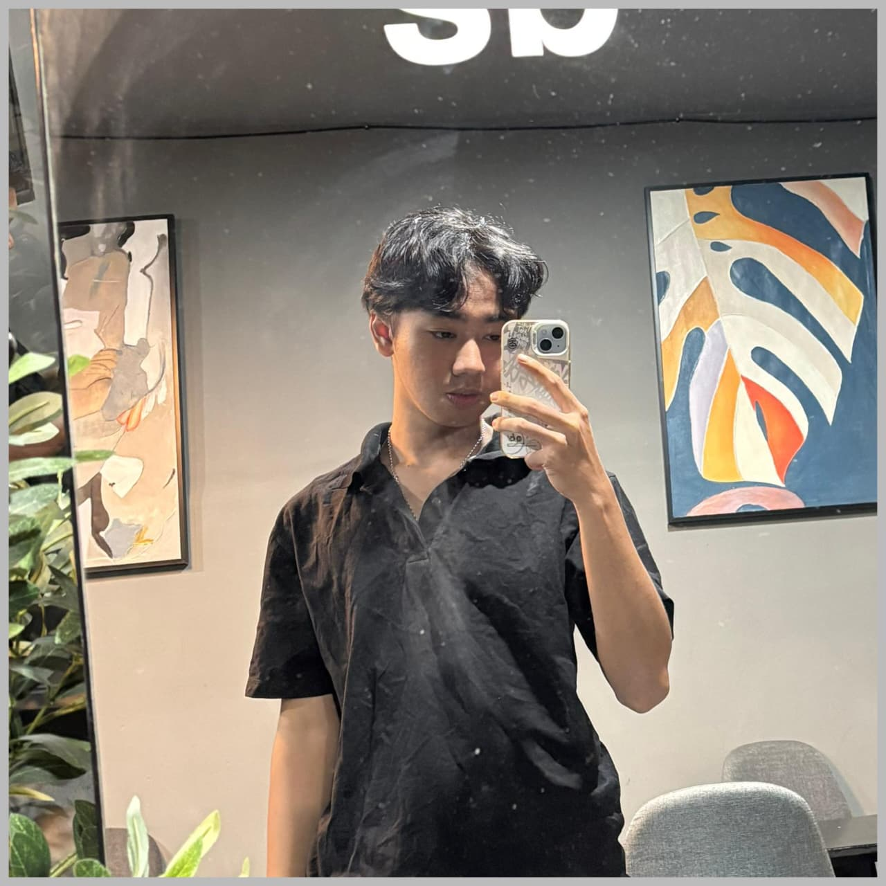

INSERT COIN...
Saya mengembangkan aplikasi mobile dan sistem website dari nol. Terbiasa merancang antarmuka, mengelola database, hingga integrasi pemetaan spasial secara akurat.
PRESS STARTKOTLIN | ANDROID | MAPS
Aplikasi pendataan lapangan pintar. Memanfaatkan kamera untuk merekam koordinat lokasi (Geotagging) secara presisi. Dilengkapi filter pendataan spesifik seperti BIBIT KEBUN BIBIT RAKYAT (KBR) untuk monitoring instansi.
JS | HTML | PHP | MYSQL | FLUTTER
Versatile Developer dengan track record ratusan completed quests! Mulai dari membangun e-commerce, sistem informasi desa, portofolio interaktif, hingga pengembangan game dan aplikasi mobile. Telah mengeksekusi lebih dari 100+ proyek freelance dan akademis dengan cepat dan efisien. Siap menghadapi tantangan coding apa pun di level selanjutnya!